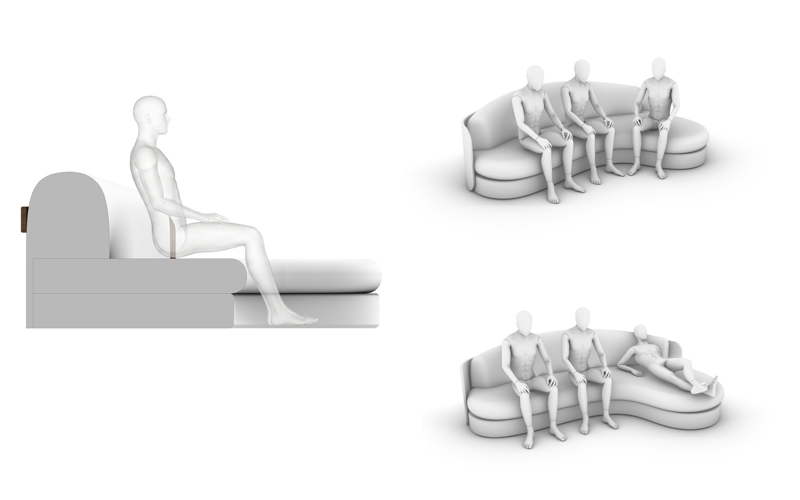
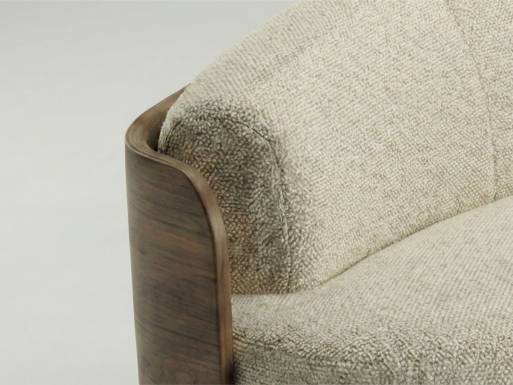
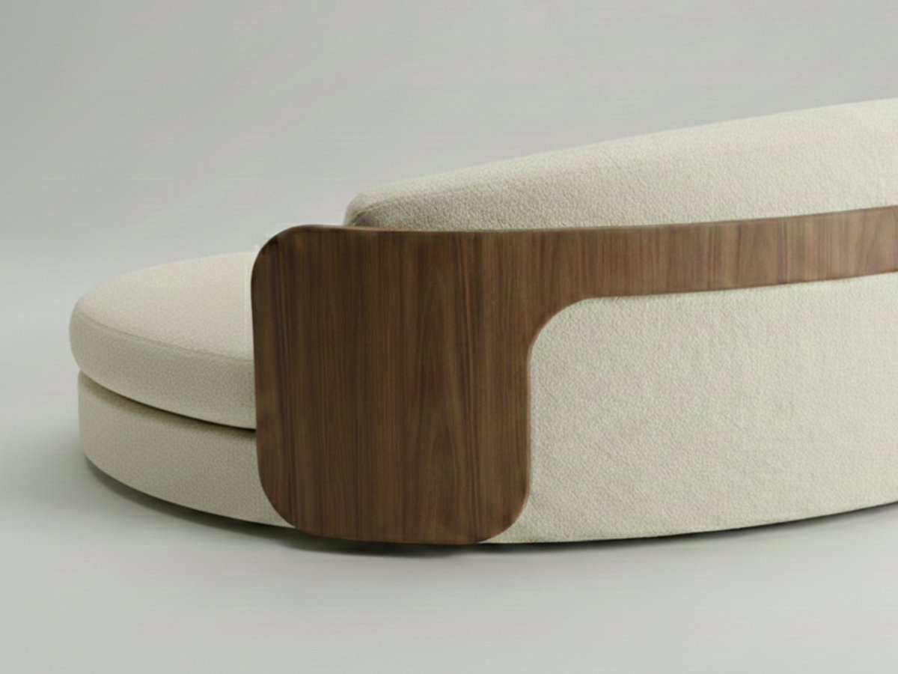
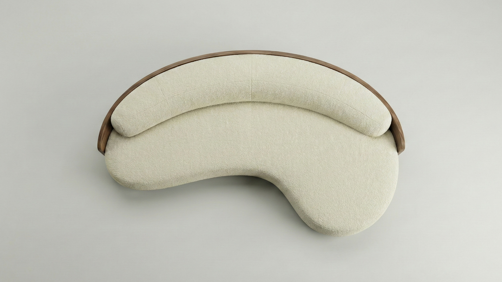

Selene
Menzione d'onore, Porada International Design Award 2025
elene trasforma il concetto di "abbraccio" in una forma fluida e scultorea. Il contrasto materico tra il rigido guscio in Noce Canaletta e le morbide cuscinature crea un volume studiato per essere protagonista a 360 gradi al centro della stanza.

- Tipo
- Progetto contest
- Anno
- 2025
- Ruolo
- Design e Interior design
- Strumenti
- Rhino, KeyShot
Il brief
Il contest internazionale Porada Arredi richiedeva l'ideazione di un concept che rispecchiasse l'identità del brand: eccellenza assoluta nella lavorazione del legno massello ed eleganza senza tempo. L'obiettivo era progettare un sistema di seduta che superasse la rigidità ortogonale tipica della zona living, introducendo linee organiche senza mai perdere di vista le rigide regole della fattibilità produttiva e del Design for Manufacturing (DFM) legate all'ebanisteria e alla tappezzeria.
Il processo
Lo sviluppo ha seguito i principi dello User-Centered Design (UCD). Attraverso la modellazione 3D avanzata, ho definito una silhouette priva di spigoli, studiando modelli ergonomici per garantire un comfort posturale ottimale sia nella zona conversazione che nell'area chaise longue. Un'attenzione particolare è stata dedicata all'architettura interna del prodotto (stratigrafia tra multistrato, poliuretano D40 e Dacron) e alla selezione della palette CMF, per valorizzare l'incontro tra l'essenza del legno e i tessuti tecnici.



Il risultato
Premiato con la Menzione Speciale della giuria, Selene è una seduta che unisce l'alta artigianalità all'ingegnerizzazione di prodotto. Il guscio ligneo, assottigliandosi nella parte posteriore, alleggerisce visivamente l'intera struttura, dimostrando che l'armonia delle forme organiche può sposarsi perfettamente con il rigore della messa in tavola tecnica e le logiche della produzione seriale di alta gamma.